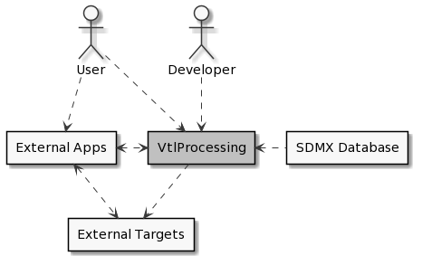
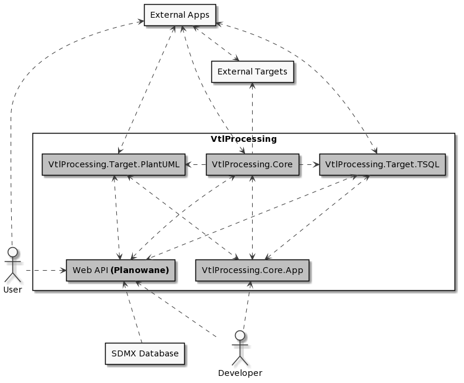

Architektura systemu
Legenda
1. A - - - > B - Strzałka zwrócona w jednym kierunku oznacza, że dane uzyskane w komponencie A są używane w komponencie B
2. A < - - - > B - Strzałka zwrócona w dwóch kierunkach oznacza, że pomiędzy komponentami A i B występuje wymiana danychZakres i kontekst systemu

Figure 1. Poziom 1: Zakres i kontekst systemu
Dekompozycja systemu

Figure 2. Poziom 2: Dekompozycja systemu
VtlProcessing.Core
Biblioteka walidująca otrzymany kod VTL oraz zwracająca jego model reprezentacji pośredniej.
Web API (Planowane)
Aplikacja internetowa pozwalająca na korzystanie z funkcjonalności bibliotek systemu.